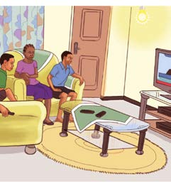

The relationship between forms of energy
Electrical energy can be converted from one form to another depending on the device used. For example, a light bulb in flashlight, converts electrical energy from batteries into light and heat energy. Carefully examine the actions depicted in Figure 18, then perform Activity11.
(a)

(b)

(c)
Figure 18: Uses of light, sound and heat
Activity 11
Investigating types of energy in the environment and their relationships
Use a library, reliable online sources, or other sources of information.
1. List the forms of energy observed in Figure 18(a), 18(b), and 18(c).
2. Identify the relationship between the types of energy observed in Figure 18(a), 18(b), and 18(c).